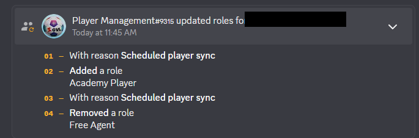
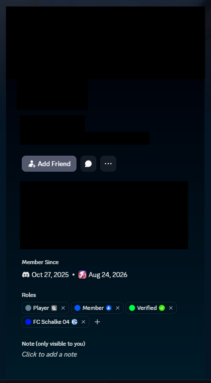
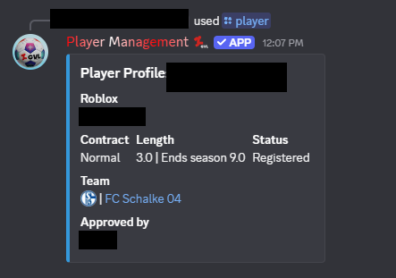
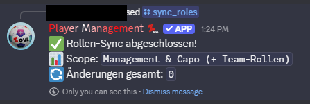
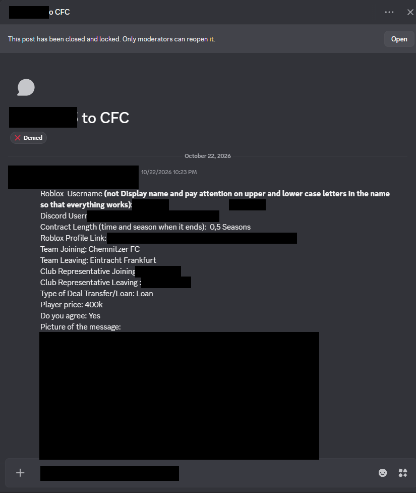
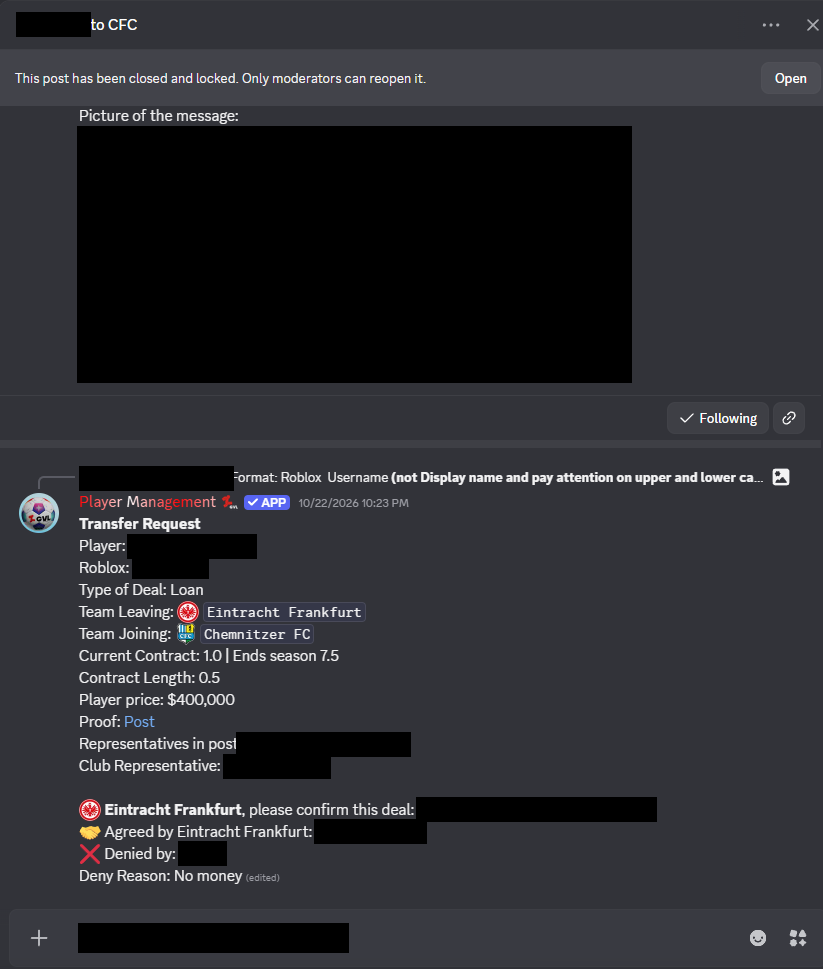
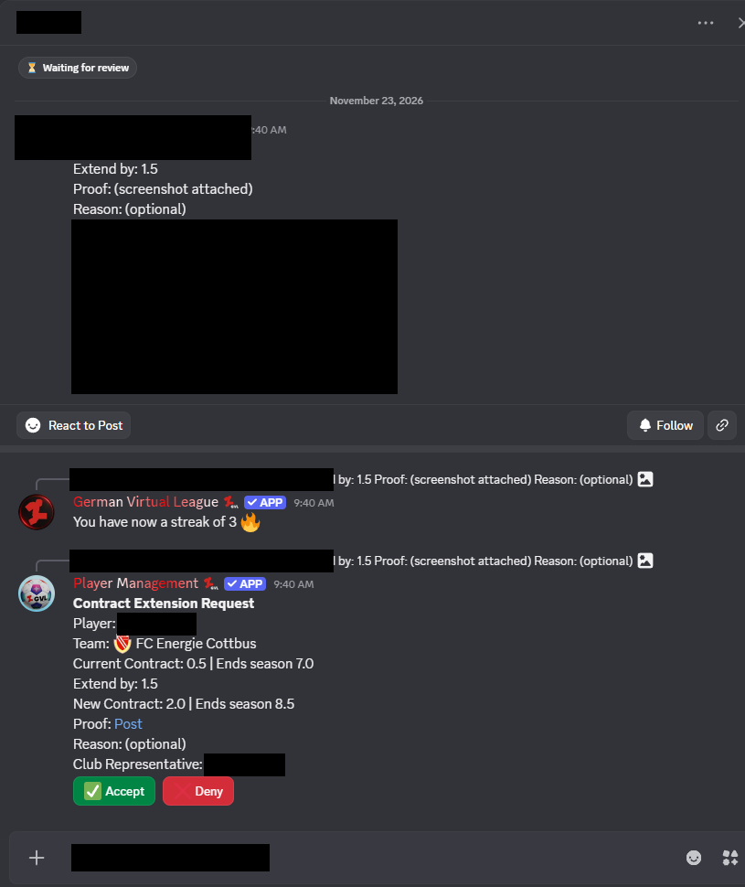
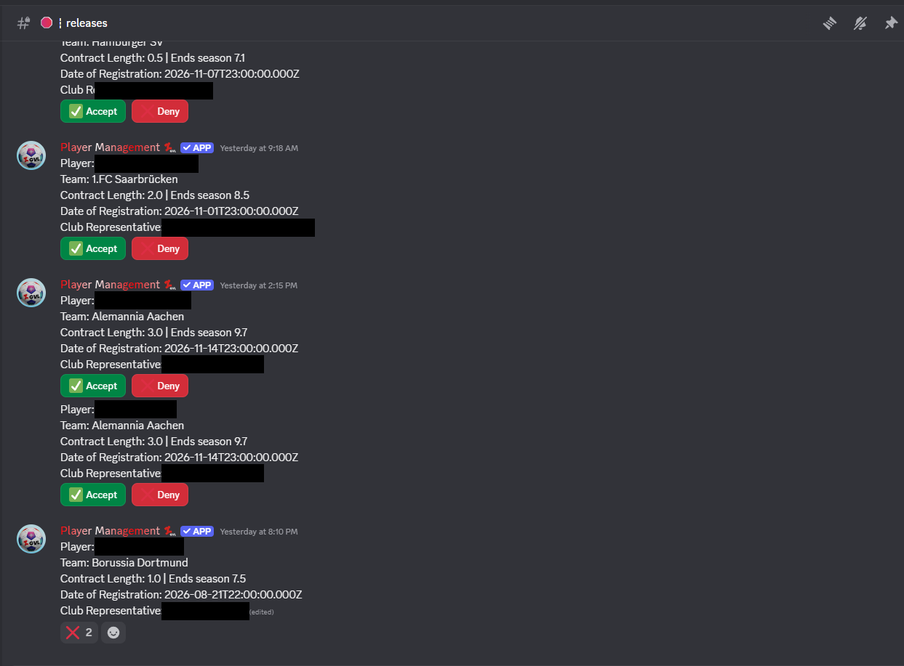

Screenshots of the features of the Player Management bot (German Virtual League) that use privileged intents. Names, IDs and profile pictures of users are blacked out.
See also the Privacy Policy and the Terms of Service.
Team and rank roles on our league server are driven by the league database. The bot regularly goes through the members of the server, gives every registered player and team staff member the correct team and rank roles, and removes them from anyone who is no longer registered or has left a team.
Audit log entry: the scheduled player sync gives a registered player the "Academy Player" role and removes the "Free Agent" role.

A registered player has the "Player" role and the team role "FC Schalke 04" on the server.

The same player in the league database, shown with /player: registered for FC Schalke 04.

League staff can also run the full sync manually with /sync_roles.

Message content is only read in the release channels and in the transfer and contract extension forums. Club representatives post a request using a fixed template; the bot reads it, checks it against the league database and turns it into a request card that the League Board accepts or denies.
A club representative creates a transfer post using the template (player, contract length, team joining, team leaving, type of deal, price).

The bot reads the post and creates the transfer request, including the confirmation by the other club and the League Board decision.

A contract extension post using the template (player, extend by, proof, reason) and the contract extension request the bot creates from it, with the current and new contract and Accept/Deny buttons.

A club representative posts the player in the release channel. The bot reads the message, deletes it and posts a release request with the player's team, contract and Accept/Deny buttons.
